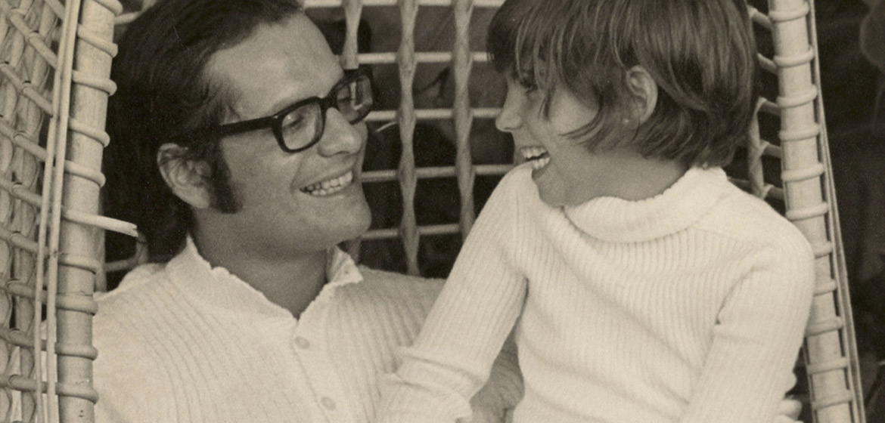

HISTORIA
La compañía fue fundada en Perú en el año 1967 por los hermanos Fernando y Eduardo Belmont Anderson. La empresa tuvo éxito y poco después de 1981 comenzó la expansión internacional en Colombia y México.2Se dividió en 1988, cuando cada uno de los hermanos decidió emprender su propio negocio, quedando a cargo Fernando en Yanbal. En 2011, su hija Janine Belmont se hizo cargo de la presidencia de la empresa
